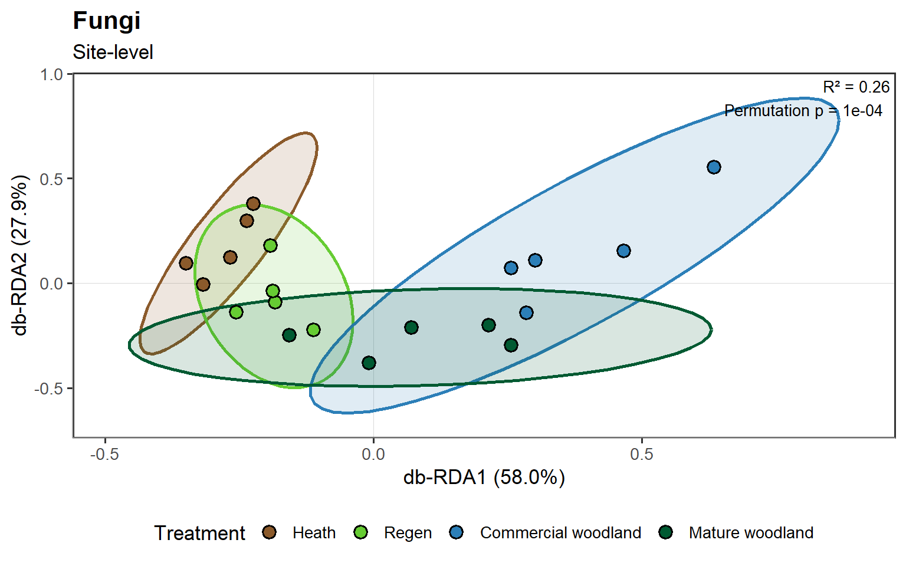

What we will cover in this session
In Session 1, we saw how to address
multivariate biodiversity data by summarising into univariate metrics
such as richness or diversity indices. However, two samples oculd have
the same richness of completely different taxa.
Here, we will use fungal data to ask how the whole community varies
across the four habitat types, using a type of multi-variate analysis,
distance-based Redundancy Analysis (db-RDA).
We will also see how to do an Indicator Species Analysis (ISA) to
find associations between taxa and habitat types.
We will:
- Prepare the working environment (again again).
- Multivariate ordination analysis with db-RDA
- Indicator Species Analysis
As in Sessions 0 and 1, we use taxon and taxa
instead of species as we use a mixed taxonomy approach.
2. Multivariate ordination analysis with with db-RDA
A taster of Multivariate methods
Multivariate analysis is an umbrella term for a diverse suite of
methods that allow us deal with data with multiple response variables.
Biodiversity data is one such type of data, where you are interested in
studying changes across sets of taxa, rather than one taxa at a time.
One family of multivariate analysis is ordination.
There are many examples of ordination methods, popular ones include
Principal Component Analysis (which we used in Session 1 to prepare a
set of vegetation scores for our regressions), Redundancy Analysis
(RDA), Canonical Correspondence Analysis (CCA), Non-metric
Multidimensional Scaling (NMDS). They all differ in how the treat the
data, and what they are trying to preserve, but they all attempt to
reduce the number of dimensions (originally we have one per taxa) to a
tractable number, typically 2 to 3, while preserving
information form the original highly dimensional object that is our
community composition.
In a nutshell, if you have Taxa A, as the Y-axis of a scatter plot,
and Taxa B as the X-axis, you can place a data point in this graph
according to the abundance of these two taxa and create a 2D (flat)
cloud of points. If you added a third Taxa, C, and a third axis, Z, you
would create a 3D point cloud. Now if you added a fourth, fight, 100th
taxa, you have an object that human brains cannot process, but
mathematically we can, and computers can do it for us.
For more detail on these methods, see chapters 11-13 of Analyzing Ecological
Data by Zuur et al, and for an example of its application, Ramette’s
publication.
Dissimilarity indices
A rough split can be drawn in these methods based on whether the
information they use is extracted directly from the geometry of the
data, PCA and RDA use Euclidean distances (i.e., straight lines) between
points or from dissimilarity matrices (e.g., NMDS, db-RDA).
There are also a range of dissimilarity indices that can be used.
Bray-Curtis is a commonly used when you have some measure of abundance,
with presence-absence data it becomes a Sørensen dissimilarity index,
similar to Jaccard’s Index. For more information, see chapter 12 of Ecological
Methodology.
Regardless of the index, the way the work is that two samples with
identical composition of taxa will have a dissimilarity of zero, and two
samples with no overlap will have a dissimilarity of 1, and everything
in between expresses the range of (dis)similarity between pairs of
samples. This is placed into a matrix with samples as both rows and
column, with each cell containing the dissimilarity between each pair.
This is then fed to your method of choice, alongside your environmental
covariates as metadata, if applicable.
Distance-based Redundancy Analysis
From the options available, here we will apply distance-based
Redundancy Analysis (db-RDA), which takes in a dissimilarity matrix,
Bray-Curtis in our case, estimated from relative read abundances. This
is a useful set up, when we want to learn about the power of covariates,
e.g., vegetation, habitat type, to explain changes in community
composition.
# Retain the same sites for all models and calculate their dissimilarities
cov_rda <- cov_site %>%
drop_na(all_of(veg_vars)) %>%
mutate(treatment = droplevels(treatment))
# Estimate Bray-Curtis Dissimilarity from community data at site-level
bray <- vegdist(comm_site[cov_rda$site_id, , drop = FALSE], method = "bray")
Model selection?
Unlike in linear regression, we don’t have a straight forward
criterion to choose between models like AIC when using permutation-based
statistical tests. What we can use, is the percentage of variance
explained R-square and adjusted R-square, to assess the performance of
different models. Here we test three models: with treatment only, with
vegetation only, and with both.
# Fit habitat, vegetation and combined models to the same distances
rda_habitat <- dbrda(bray ~ treatment, data = cov_rda)
rda_vegetation <- dbrda(bray ~ moss + lichen + herbs + shrubs + trees + bare_litter +
rocky + fern, data = cov_rda)
rda_full <- dbrda(bray ~ treatment + moss + lichen + herbs + shrubs + trees + bare_litter +
rocky + fern, data = cov_rda)
# Test the models' explanatory power
set.seed(123)
perms <- shuffleSet(nrow(cov_rda), nset = n_perm)
# Extract R-square and run the overall permutation test for each model
r2_habitat <- RsquareAdj(rda_habitat)
test_habitat <- anova(rda_habitat, permutations = perms)
r2_vegetation <- RsquareAdj(rda_vegetation)
test_vegetation <- anova(rda_vegetation, permutations = perms)
r2_full <- RsquareAdj(rda_full)
test_full <- anova(rda_full, permutations = perms)
# Put the three model results side by side in one table ----
model_summary <- tibble(
Model = c("Habitat", "Vegetation", "Habitat + vegetation"),
`R-square` = c(r2_habitat$r.squared, r2_vegetation$r.squared, r2_full$r.squared),
`Adjusted R-square` = c(r2_habitat$adj.r.squared, r2_vegetation$adj.r.squared,
r2_full$adj.r.squared),
`Permutation p` = c(test_habitat$`Pr(>F)`[1], test_vegetation$`Pr(>F)`[1],
test_full$`Pr(>F)`[1]))
kable(model_summary, digits = 4, caption = "Fit and overall permutation test for each model")
Fit and overall permutation test for each model
| Habitat |
0.2611 |
0.1226 |
0.0001 |
| Vegetation |
0.4805 |
0.1028 |
0.0963 |
| Habitat + vegetation |
0.6497 |
0.1680 |
0.0401 |
The tests we are running are permutation tests, that we access
through the anova() function (ANalysis
Of VAriance). Permutation tests rely on comparing
whether the percentage of variance explained by a set of predictors
(habitat, vegetation), is significantly higher than a null model. The
null model is prepared by changing (permuting) the labels of your
samples, in our case, the site_id because we have averaged samples
within sites, and re-fitting the model with the same predictors. This is
done many times, so that we can know how often our model outperforms the
null model.
Our example is very illustrative, because in principle the Vegetation
only model explained more variance, 48% than the Habitat only model,
26%, and the combination of the two explained 65% of the variance.
However, the Vegetation only model is only marginally significant (i.e.,
~9% of the time, our model explaines this level of variance on a
randomised dataset), the adjusted R-square is only 10%, lower than the
Haibtat model, which is 12%, and the two together only have 16%
adj.R-square. With these results, one could choose the most parsimonious
model (fewer degrees of freedom used) with Habitat only, which already
explains most of the variance that is available, and does so
signficantly more than the null model.
With our chosen model, we can tease apart some of the effects, and
see which individual levels of habitat are most informative.
anova(rda_habitat, permutations = perms, by = "onedf")
## Permutation test for dbrda under reduced model
## Sequential test for contrasts
## Permutation: free
## Number of permutations: 9999
##
## Model: dbrda(formula = bray ~ treatment, data = cov_rda)
## Df SumOfSqs F Pr(>F)
## treatmentregen 1 0.24017 1.2530 0.1768
## treatmentcom_wood 1 0.46526 2.4274 0.0013 **
## treatmentmat_wood 1 0.37849 1.9747 0.0095 **
## Residual 16 3.06669
## ---
## Signif. codes: 0 '***' 0.001 '**' 0.01 '*' 0.05 '.' 0.1 ' ' 1
Like in linear regression, these are contrasts against a
reference-level, a null model with all habitats pooled into one
category. Each row compared the addition of a habitat category to the
previous, and whether this improves the explanatory power of the model.
Commercial and mature woodland, and by absence heath, provide the most
explanatory power.
Model validation?
Dissimilarity-based indices such as db-RDA are very flexible, but
require some checks for underlying assumptions too. Specifically, we
need to check that the spread of our data points within each group
(habitat type) is similar (see the plot below for clarification).
Differences of dispersion can be caused if a particular habitat had a
very homogeneous fungal community, our data points would be tightly
clustered, while a more heterogeneous habitat will have them spread over
a larger area. If this is the case, we cannot know whether the
significance of our habitat covariate is due to genuine differences in
community composition, or differences in dispersion. Though the latter,
is also informative about community arrangements in the system.
# Compare within-habitat dispersion using the same sites and distances
dispersion <- betadisper(bray, group = cov_rda$treatment, bias.adjust = TRUE)
permutest(dispersion, permutations = perms)
##
## Permutation test for homogeneity of multivariate dispersions
## Permutation: free
## Number of permutations: 9999
##
## Response: Distances
## Df Sum Sq Mean Sq F N.Perm Pr(>F)
## Groups 3 0.060786 0.020262 1.8158 9999 0.1796
## Residuals 16 0.178540 0.011159
No significant differences in dispersion, therefore the differences
we find can be ascribed to shifts in community composition.
Ordination Plot
We are ready to visualise our results, in an ordination plot.
# Extract the first two habitat-constrained axes
eig <- eigenvals(rda_habitat, model = "constrained")
eig <- eig[eig > 0]
axes <- seq_len(min(2, length(eig)))
axis_labels <- sprintf("db-RDA%d (%.1f%%)", axes, 100 * eig[axes] / sum(eig))
# Match the plotted site scores to their habitats
site_scores <- scores(rda_habitat, display = "sites", choices = axes, scaling = 1) %>%
as_tibble(rownames = "site_id") %>%
left_join(select(cov_rda, site_id, treatment), by = "site_id")
# Format the habitat model statistics for the plot ----
rda_label <- sprintf("R² = %.2f\nPermutation p = %s",
r2_habitat$r.squared,
format.pval(test_habitat$`Pr(>F)`[1], digits = 3))
# Plot site scores and within-habitat ellipses ----
plot_rda <- ggplot(site_scores, aes(dbRDA1, dbRDA2, fill = treatment)) +
geom_hline(yintercept = 0, linewidth = 0.3, colour = "grey85") +
geom_vline(xintercept = 0, linewidth = 0.3, colour = "grey85") +
stat_ellipse(aes(colour = treatment, group = treatment),
geom = "polygon", type = "t", level = 0.95,
alpha = 0.15, linewidth = 0.9, show.legend = FALSE) +
geom_point(shape = 21, size = 3.4, stroke = 1, colour = "black") +
annotate("text", x = Inf, y = Inf, label = rda_label,
hjust = 1.08, vjust = 1.2, size = 3.6) +
scale_fill_manual(values = habitat_colours, labels = habitat_labels, drop = FALSE) +
scale_colour_manual(values = habitat_colours, drop = FALSE) +
scale_x_continuous(expand = expansion(mult = 0.08)) +
scale_y_continuous(expand = expansion(mult = 0.08)) +
labs(title = "Fungi", subtitle = "Site-level",
x = axis_labels[1], y = axis_labels[2], fill = "Treatment") +
theme_bw(base_size = 13) +
theme(panel.grid = element_blank(),
panel.border = element_rect(linewidth = 1),
axis.line = element_line(colour = "grey65", linewidth = 0.4),
plot.title = element_text(face = "bold"),
legend.position = "bottom")
plot_rda

Here, each axis is a dimension that attempts to capture as much
variation of the original fungal community as possible. The percentages
in brackets the proportion explained by each axis out of the total
model’s variance explained. This uses unadjusted R-square, hence 24%.
Each point represents a site (5 per habitat type) along these new
dimensions. Points close together have more similar fungal communities
than points far apart.
The spread of say regen, compared against commercial woodland seems
quite different, and it likely is, though with five sites per habitat,
we may lack the power to detect this. Overall, we find a distinct and
clustered heath fungal community, a regen community that seems to
transition from heath towards a mature woodland community, and a
commercial woodland fungal community that overlaps, but is also quite
distinct from a mature woodland fungal community.
This concludes are multivariate ordination analysis of fungal
communities.
We will now briefly go over a method to identify taxa that may act as
indicators of different habitat types.
3. Indicator Species Analysis
Another way of handling multivariate data, is identifying those taxa
that are most informative about the process of interest, here, the
ecological succession of the fungal community. Essentially a different
way of reducing the dimensionality of the data.
We can do this through an Indicator Species Analysis (ISA). We use
the multipatt() function from the indicspecies
package to access the IndVal.g metric first developed by
Dufrêne and Legendre (1997).
It is a straight forward but clever piece of maths. It has two
components:
| Specificity, \(A\) |
The habitat’s share of the taxon’s mean relative read
frequency summed across habitat means. It is high when the taxon’s reads
are concentrated in that habitat. |
| Fidelity, \(B\) |
The proportion of sites in that habitat with a
detection. It is high when the taxon is detected at most of the
habitat’s sites. |
The statistic returned is \(\sqrt{A \times
B}\), which tells us whether a particular taxa is associated to a
habitat category. This is wrapped with a permutation test to give us a
probability that the association is more likely than it would be
expected by chance.
# Implement ISA with multipatt
habitat_group <- droplevels(cov_site$treatment)
set.seed(123)
isa <- multipatt(comm_site, cluster = as.integer(habitat_group),
func = "IndVal.g", duleg = TRUE,
control = how(nperm = n_perm))
This returns an indicator value, and p-value for each individual taxa
in our dataset (441). We are going to visualise a subset with values
higher than 0.5, and that are statistically significant (p <
0.05).
# Extract information from the isa object
selected_index <- cbind(seq_len(nrow(isa$sign)), isa$sign$index)
# Gather the data in a readable format
isa_table <- isa$sign %>%
as_tibble(rownames = "taxon") %>%
mutate(taxon = taxon,
treatment = factor(levels(habitat_group)[index], levels = habitat_levels),
specificity = isa$A[selected_index], fidelity = isa$B[selected_index],
indval = stat, p_value = p.value, p_adj = p.adjust(p.value, method = "BH"),
.keep = "none")
# Filter by indicator value and significance
isa_selected <- isa_table %>%
filter(indval > 0.50, p_value < 0.05)
# Print
isa_selected %>%
arrange(treatment, desc(indval)) %>%
mutate(treatment = unname(habitat_labels[as.character(treatment)])) %>%
select(Habitat = treatment, Taxon = taxon, Specificity = specificity,
Fidelity = fidelity, `IndVal score` = indval, `Permutation p` = p_value) %>%
kable(digits = 4, caption = "Fungal indicator candidates by habitat")
Fungal indicator candidates by habitat
| Heath |
Helotiaceae |
0.9264 |
0.8 |
0.8609 |
0.0044 |
| Heath |
Aspergillus |
0.8154 |
0.8 |
0.8077 |
0.0305 |
| Heath |
Dactylella_microaquatica |
0.7564 |
0.8 |
0.7779 |
0.0259 |
| Heath |
GS34 |
0.9697 |
0.6 |
0.7628 |
0.0358 |
| Heath |
Mortierella_pseudozygospora |
0.7619 |
0.6 |
0.6761 |
0.0476 |
| Regen |
Suillus_tomentosus |
0.8981 |
1.0 |
0.9477 |
0.0024 |
| Regen |
Chloridium |
0.8277 |
0.8 |
0.8137 |
0.0170 |
| Regen |
Mortierella_globulifera |
0.7836 |
0.8 |
0.7917 |
0.0368 |
| Regen |
Oidiodendron_maius |
0.5712 |
1.0 |
0.7558 |
0.0161 |
| Regen |
Penicillium |
0.6218 |
0.8 |
0.7053 |
0.0259 |
| Commercial woodland |
Mortierella_humilis |
0.6973 |
1.0 |
0.8350 |
0.0189 |
| Commercial woodland |
Cryptosporiopsis |
1.0000 |
0.6 |
0.7746 |
0.0340 |
| Commercial woodland |
Venturia |
0.9033 |
0.6 |
0.7362 |
0.0406 |
| Mature woodland |
Dictyolus |
0.7751 |
1.0 |
0.8804 |
0.0038 |
| Mature woodland |
Archaeorhizomyces_borealis |
0.5060 |
1.0 |
0.7113 |
0.0431 |
We will not go into these species here, though the association of a
Suillus species with the regen sites is of great ecological
relevance.
We will take a moment to consider a potential issue arising from a
test like this, multiple testing. We have done a statistical indicator
test for each taxa in our dataset >400. Doing so many tests, inflates
the probability of a Type I error. Type I error is finding a statistical
association when there is none, i.e., if we run enough tests, a given
species may appear associated to a habitat purely by chance, and the
more tests you do, the higher this probability it is. It is also called
false positive, and its counterpart is the Type II error, or false
negative, i.e., not finding a statistical association when there is
one.
To avoid these we should, first of all, only run relevant statistical
tests. For instance, we might want to restrict our taxa to symbiotrophic
fungi that are more likely to respond to changes in above ground
vegetation. When we have our minimal set, if it is still a large number
of tests, we may want to adjust p-values for multiple testing.
These corrections adjust the threshold of statistical significance
based on how many tests are being run. There are many, Bonferroni is
widely known. Here we use Benjamini–Hochberg (BH). We have kept
p_adj = p.adjust(p.value, method = "BH") in the code above
to demonstrate its use, but otherwise it is unused, as with only 20
sites, and over 400 taxa, no statistical test maintains its significance
after the correction. Thus, we should be careful with our interpretation
of the ISA, and use it for exploratory purposes, and not to draw strong
biological inference.
Thus concludes our second session, where we have used multivariate
ordination methods to analyse changes in community composition. In the
next, and final, session, we will explore another form of multivariate
analysis that does not rely on ordination: joint Species Distribution
Models (jSDMs)
Software versions
## R version 4.6.2 (2026-10-29 ucrt)
## Platform: x86_64-w64-mingw32/x64
## Running under: Windows 11 x64 (build 26300)
##
## Matrix products: default
## LAPACK version 3.12.1
##
## locale:
## [1] LC_COLLATE=English_United Kingdom.utf8
## [2] LC_CTYPE=English_United Kingdom.utf8
## [3] LC_MONETARY=English_United Kingdom.utf8
## [4] LC_NUMERIC=C
## [5] LC_TIME=English_United Kingdom.utf8
##
## time zone: Europe/London
## tzcode source: internal
##
## attached base packages:
## [1] stats graphics grDevices utils datasets methods base
##
## other attached packages:
## [1] indicspecies_1.8.0 knitr_1.51 vegan_2.7-3 permute_0.9-10
## [5] lubridate_1.9.5 forcats_1.0.1 stringr_1.6.0 dplyr_1.2.1
## [9] purrr_1.2.2 readr_2.2.0 tidyr_1.3.2 tibble_3.3.1
## [13] ggplot2_4.0.3 tidyverse_2.0.0 here_1.0.2
##
## loaded via a namespace (and not attached):
## [1] sass_0.4.10 generics_0.1.4 stringi_1.8.7 lattice_0.23-1
## [5] hms_1.1.4 digest_0.6.39 magrittr_2.0.5 evaluate_1.0.5
## [9] grid_4.6.2 timechange_0.4.0 RColorBrewer_1.1-3 fastmap_1.2.0
## [13] Matrix_1.7-6 rprojroot_2.1.1 jsonlite_2.0.0 mgcv_1.9-4
## [17] scales_1.4.0 jquerylib_0.1.4 cli_3.6.6 crayon_1.5.3
## [21] rlang_1.2.0 bit64_4.8.0 splines_4.6.2 withr_3.0.3
## [25] cachem_1.1.0 yaml_2.3.12 otel_0.2.0 tools_4.6.2
## [29] parallel_4.6.2 tzdb_0.5.0 vctrs_0.7.3 R6_2.6.1
## [33] lifecycle_1.0.5 bit_4.6.0 vroom_1.7.1 MASS_7.3-66
## [37] cluster_2.1.8.3 pkgconfig_2.0.3 pillar_1.11.1 bslib_0.10.0
## [41] gtable_0.3.6 glue_1.8.1 xfun_0.57 tidyselect_1.2.1
## [45] rstudioapi_0.18.0 farver_2.1.2 nlme_3.1-171 htmltools_0.5.9
## [49] labeling_0.4.3 rmarkdown_2.31 compiler_4.6.2 S7_0.2.2
Previous: Session 1 | Home | Next: Session
3
